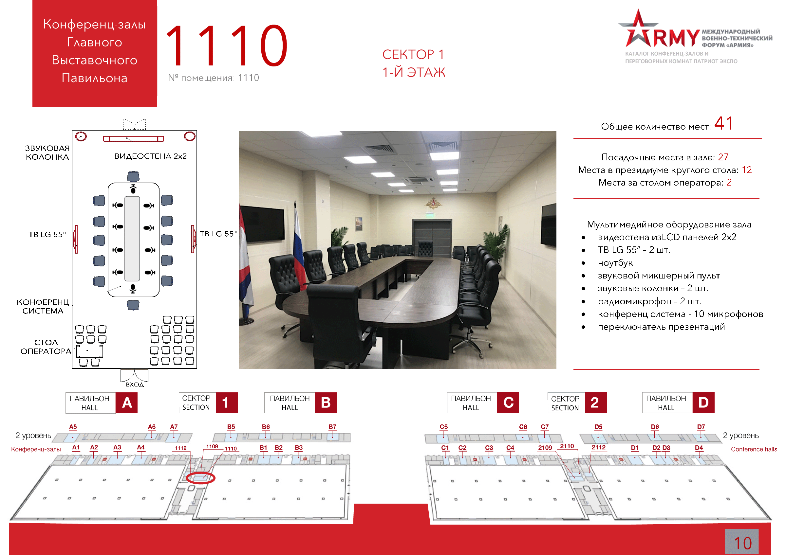

: 25.08.2020
: 10:00 - 14:00
: Конференц-зал 1110
: НП "Горнопромышленники России", ООО "ВК "Мир-Экспо"
: Ведущий менеджер ООО "ВК "Мир-Экспо" Моисеева Дарья Александровна. Тел: + 7 (495) 988-1620, e-mail: imt@mirexpo.ru
Цель круглого стола: обсуждение процессов инновационно-технологического развития отраслей минерально-сырьевого комплекса на основе диверсификации деятельности оборонных предприятий России и определить меры по их устранению.
В сектор добычи и переработки минерально-сырьевых ресурсов, помимо технического обновления действующих производств, могут быть внедрены новейшие высокопроизводительные технологии и оборудование для получения разнообразной продукции с большой добавленной стоимостью. Также могут быть реализованы перспективные проекты, на масштабную реализацию которых предприятиям минерально-сырьевого комплекса не хватает ресурсов. Продукция зарубежных производителей используется на особо опасных и критически важных объектах, создавая серьезную угрозу производственной, экологической, информационной и энергетической безопасности страны. Низкий спрос на продукцию отечественных производителей высоких технологий в результате приводит к отсутствию развития отечественных технологий, дальнейшему отставанию России от лидирующих в данной области стран США, Германии, Японии, Франции. В настоящее время высокотехнологичная продукция оборонных предприятий России практически не представлена в указанном критически важном сегменте минерально-сырьевого комплекса, вопреки имеющемуся потенциалу.
На обсуждение участников круглого стола будут вынесены вопросы использования потенциала оборонно-промышленного комплекса в производстве высокотехнологичной продукции гражданского назначения, создания благоприятных возможностей для обновления основных фондов всех промышленных отраслей на основе трансфера передовых технологий и синергии от сложения производственно-экономических потенциалов.
Модератор: генеральный директор НП "Горнопромышленники России" Вержанский Александр Петрович.
